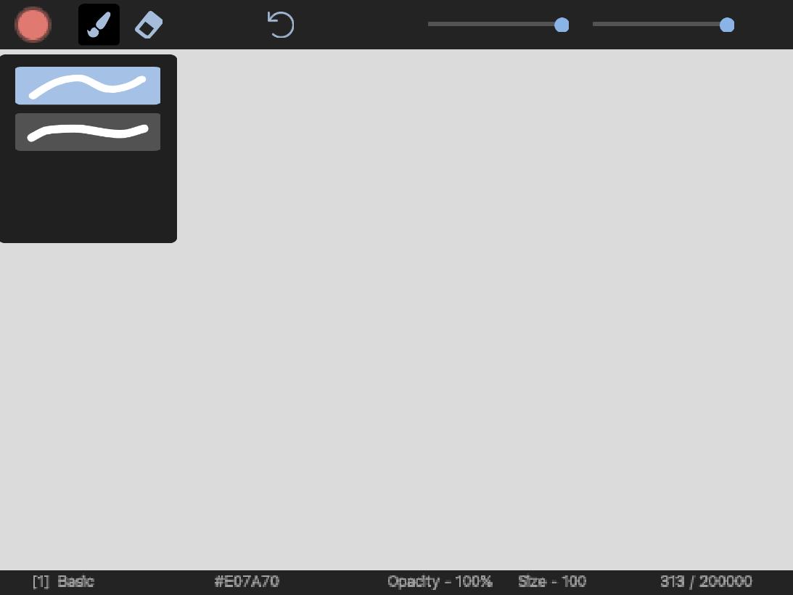

Paint is a simple drawing program made on Scratch. You can find the project here.
Paint is divided into three main parts: toolbar, canvas, and status bar.
This is where you choose your brush and adjust parameters such as opacity and size.
The status bar shows you information like the brush type and the hex color code.
The color panel is where you choose and adjust the color of your brush.
Choose a brush type and start painting.
Click on the eraser icon to erase paint on the canvas.
Paint saves your artwork in a .txt format. The maximum data size is 200000, which is the maximum list size for Scratch. You can find instructions on how to save and import your artwork here.
Right click and hit save image as to save your artwork as a .png image.